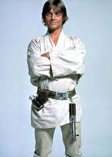

Люк Скайуокер
Люк Скайуо́кер (англ. Luke Skywalker) — один из главных персонажей вселенной «Звёздные войны», джедай, сын сенатора с Набу Падме Амидалы Наберри и рыцаря-джедая Энакина Скайуокера. Старший брат-близнец Леи Органы Соло. В оригинальной трилогии и трилогии-сиквеле в роли Люка снялся Марк Хэмилл[1][2].
Родился в медицинском центре Полис-Масса в день создания Галактической Империи. После смерти матери, Люка отправили на Татуин к единоутробному брату Энакина Оуэну Ларсу, чтобы спрятать от Палпатина. На этой планете, под присмотром опекунов и магистра Оби-Вана Кеноби, Люк провёл своё детство. Соединился с Силой в фильме «Последние Джедаи».
В его честь назван кратер Скайуокер на Хароне (название пока не утверждено Международным астрономическим союзом).
Содержание
Биография
Родился в 19,5 ДБЯ, в день упразднения Галактической Республики. После того, как его отец обратился на тёмную сторону Силы, мать умерла, а сестра была удочерена сенатором Бэйлом Органой и увезена на Алдераан, Люк воспитывался дядей (сводным братом отца) и тётей на пустынной планете Татуин. Имперские штурмовики, прилетевшие на Татуин в поисках похищенных повстанцами чертежей «Звезды Смерти», убили дядю и тётю Люка. Тогда юный Скайуокер, наставляемый старым джедаем Оби-Ваном Кеноби, примыкает к повстанческому Альянсу и становится значимой фигурой в ходе Галактической Гражданской войны. Будучи причастным к тайнам Силы, он возродил Орден джедаев, практически уничтоженный антагонистом джедаев — ситхом Императором Палпатином.
Плод запретной любви между Падме Амидалой и джедаем Энакином Скайуокером, Люк Скайуокер долго не ведал о своём происхождении. Всё детство Люк провёл на Татуине, работая на ферме своего дяди. Но в Год битвы при Явине в руки Люку попали два дроида — C-3PO и R2-D2 — и последний поведал ему о своём задании — отыскать Оби-Вана Кеноби, которого Люк знал как странного отшельника, живущего неподалёку. Выслушав послание, переданное дроидами, Оби-Ван отправился на помощь товарищам и взял с собой Люка. Люк проявил себя способным учеником и смог обучаться у самого Йоды. В 3 ПБЯ правду своего рождения Люк узнал от своего отца, Дарта Вейдера. С покорностью и спокойствием, отличающими истинного джедая, Люк принял свою судьбу и продолжил сражаться. И наконец, Скайуокер безоружным пришёл в ловушку, подготовленную самим Императором с целью переманить его на Тёмную сторону. Во время сражения с отцом Люк попытался повлиять на него с целью вернуть на светлую сторону Силы. После того как Люк победил своего отца, он не стал его добивать и продолжил убеждать вернуться обратно к свету, несмотря на то, что в это время император подвергал его пыткам молнией, в итоге Дарт Вейдер осознал правоту сына и сбросил императора в шахту Звезды Смерти, после чего сам погиб.
Дальнейшая судьба Люка описана в комиксах о звёздных воинах. После многочисленных приключений, подробно описанных в комиксах (например: становления магистром, учителем, Гранд-мастером; изучения Силы; определения природы Тёмной и Светлой стороны; восстановления демократии в галактике; основания нового Ордена Джедаев), Люк сливается с Силой, чтобы и в будущем наставлять будущие поколения джедаев. После приобретения Диснеем прав на франшизу «Звёздных войн» все события основного канона после VI эпизода были расписаны заново, а то, что ранее именовалось Расширенной вселенной (англ. Extended Universe) и имело различные степени признания со стороны Lucasfilm, получило общее название «Легенды».
В сериале Мандалорец Люк появляется в последней серии 2 сезона. Люк, вероятно, услышав зов силы Грогу с планеты Тайтон, отправился за ним. Прибыв на крейсер моффа Гидеона, Люк уничтожает темных штурмовиков с помощью светового меча и Силы, тем самым спасает героев сериала. Также, забирает Грогу на обучение.
В фильме «Звёздные войны: Пробуждение Силы» становится известно, что Люк действительно тренировал джедаев в возрождённой академии, но после того, как его племянник Бен Соло, будучи одним из его учеников, переходит на Тёмную Сторону и истребляет всю остальную академию, Люк уходит в изгнание на далёкую планету Ак-То. В конце фильма Люк был найден восприимчивой к Силе мусорщицей Рей с помощью оставленных координат, найденных R2-D2.
В фильме «Звёздные войны: Последние джедаи» Люк Скайуокер принялся за обучение Рей искусствам Светлой стороны Силы и вступил в борьбу с силами Верховного Лидера Сноука и его ученика Кайло Рена — предводителя Рыцарей Рен. После финальной схватки в виде проекции со своим бывшим учеником Кайло Реном Люк слился с Силой, как магистр Йода в VI эпизоде.
В фильме «Звёздные войны: Скайуокер. Восход» когда Рей обнаруживает, что она является внучкой Императора Палпатина, она изгоняет себя на Ак-То, как это сделал Люк. Она бросает световой меч Люка в горящие обломки истребителя СИД, на котором она прибыла туда. Люк появляется как призрак Силы и упрекает Рей за неуважение к оружию джедаев. Затем Люк признает, что он был неправ, не участвуя в Сопротивлении, и благодарит Рей за то, что она помогла ему заново открыть себя. Люк убеждает Рей рассматривать себя не как внучку Палпатина, а как хорошего человека, которого Лея видела в ней во время обучения, и не отказываться от битвы с Императором Ситхов. Люк одалживает Рей свой старый крестокрыл и советует объединить световой меч своего отца со старым световым мечом Леи из её битвы на Экзеголе.
После того, как Рей побеждает Палпатина раз и навсегда, она посещает ферму на Татуине, где вырос Люк. Она закапывает световые мечи Люка и Леи, показывая, что она сконструировала свой собственный меч — с жёлтым клинком. Местный житель спрашивает Рей, кто она. Умершая ранее Лея и Люк появляются как призраки Силы, Рей называет себя Рей Скайуокер, тем самым полностью отрекаясь от тёмного наследия Палпатина.
Критика и отзывы
Журнал «Мир Фантастики» поставил Люка и Лею на 2-е место в списке «10 самые-самые фантастические близнецы»[3].
Примечания
- Mark Hamill: New Star Wars Is a ‘Gift’. Дата обращения: 7 августа 2015. Архивировано 21 января 2016 года.
- Star Wars: The Force Awakens: When C-3PO reunited with Luke Skywalker. Дата обращения: 7 августа 2015. Архивировано 4 августа 2015 года.
- Михаил Попов. Два сапога — одного поля ягоды. Самые-самые… фантастические близнецы // Мир фантастики. — 2007. — № 45. — С. 104—110. Архивировано 27 марта 2012 года.
Ссылки
- Luke Skywalker at the Star Wars Databank
- Люк Скайуокер на Вукипедии: Вики о Звёздных Войнах
- Luke Skywalker on IMDb
- Maytum, Matt. Star Wars Special (неопр.) // Total Film. — Future plc. — ISSN 1366-3135.